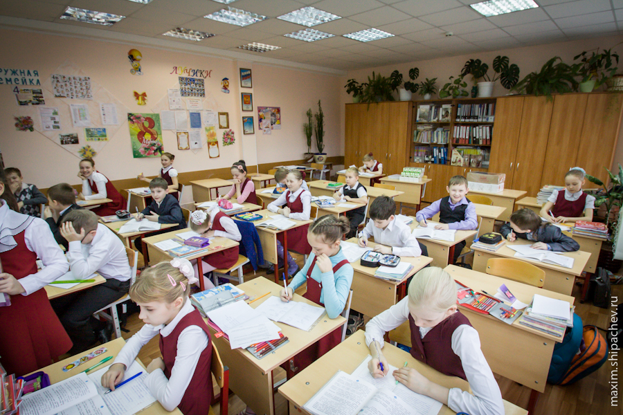
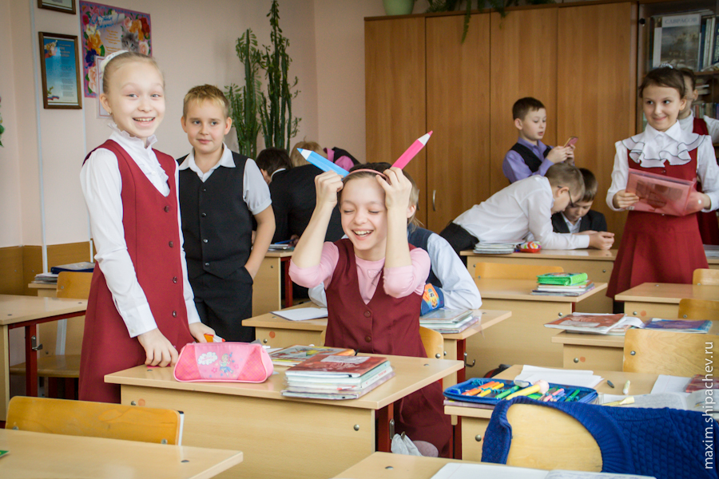
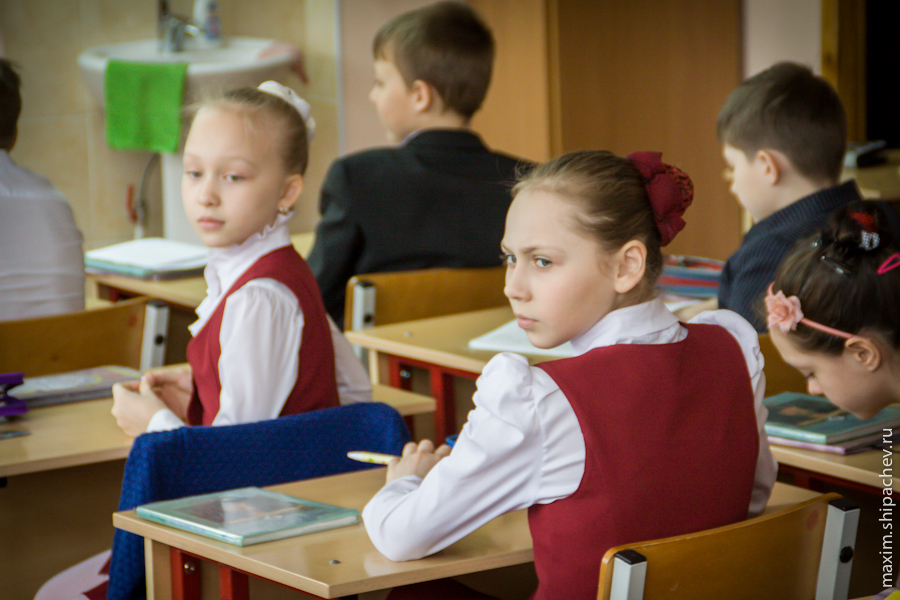

Мой сын в этом году заканчивает первый выпускной класс (то есть четвёртый). Мне показалось хорошей идеей подготовить к выпускному не просто стандартный фотоальбом, а фоторепортаж из жизни сына и его одноклассников. Списался тогда с Женей Золотухиным, договорились, что он придёт в школу и проведёт со своим никоном и четвёртым Вэ пару дней. Сошлись на 500 рублях с человека. Сумму, причём я предложил Жене сам, 500 рублей, мне показалось нормальными деньгами за несколько фотографий сына выбранных из кучи снимков сделанных за два дня работы и последующей обработки.
Близилось родительское собрание, на котором я и поведал о казавшейся мне оригинальной и интересной идее. Идею зарубили на излёте с мотивацией «10 тыщ — очень дорого, у нас и самих фотоаппараты есть».
С той встречи с родителями прошло уже полгода. Заканчивалась третья четверть и на очередном родительском собрании выяснилось, что «сын у меня не признаёт авторитетов, учит одноклассников ругаться матом во Вконтакте и играет на уроках в телефон». Масла в огонь подлило то, что его папа (я) «не доверяю мнению психологов». Есть такая тема у некоторых родителей «в любой непонятной ситуации иди к психологу». Правда сына моего во Вконтакте нет, и телефон, в который можно играть, он потерял месяц назад, ну да ладно… Не признаёт авторитетов, знаю.
Появился повод сходить посмотреть, как там в школе на самом деле, а заодно и реализовать идею в силу своих скудных умений. Других вариантов реализации всё равно не предвиделось.
Итак, 25 гимназия: 4«В» класс. Классный руководитель Цикунова Надежда Яковлевна. Надежда Яковлевна хороший, опытный педагог. Даже с нашими с сыном скверными характерами мы умудряемся, как мне кажется, находить общий язык.
Надеюсь, вам понравится, а сами вы окунётесь в школьную атмосферу, которую, наверняка, уже позабыли. Я-так, реально, свою «началку» помню лишь в паре-тройке фрагментов.

В общей сложности я пробыл в школе на четырёх уроках. Было довольно интересно наблюдать, что делают дети и во время уроков и на перемене. В четвёртом классе на перемене уже почти никто не бегает. Большинство… правильно, играет в телефоны.

